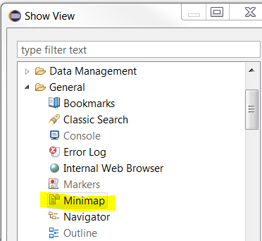
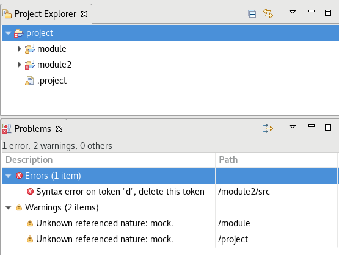
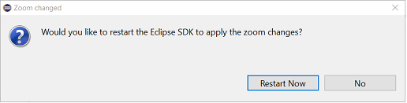

Here are descriptions of some of the more interesting or significant changes made to the Eclipse Platform for the 4.9 release of Eclipse. They are grouped into:
Plug-in developers will also be interested in the corresponding What's new document in the plug-in developer's guide.
We also recommend to read the Tips and Tricks.
Views, Dialogs and Toolbar |
|
| Minimap |
The Minimap gives you a high level overview of the content of the current active text editor which aids in
navigation and better understanding of the code.
The Minimap view can be opened by typing "minimap" in the Quick Access search box.  Here are the screenshots of the Minimap:
|
| Project Explorer shows problem markers on project hierarchy |
When using the Projects Presentation > Hierarchical mode of Project Explorer, the error
markers from child projects are now reported to the parent nodes, including the parent projects
and folders from other projects.
This allows you to easily detect errors and navigate through them from the Project Explorer when the project hierarchy is collapsed.  |
| Restart Eclipse when zoom changes for primary monitor |
When the SWT zoom changes for the primary monitor, you are prompted to restart Eclipse to apply the changes.
On Windows 10 with dpiAwareness settings enabled, a dialog to restart the Eclipse SDK is prompted as shown below:  Note: This feature is currently supported on Windows 10 only. |
Preferences |
|
| Proxy settings migrated to use GSettings instead of GConf |
The Preferences > General > Network Connections preference page, now uses GSettings to detect proxy settings instead of GConf.
GConf has been deprecated for several years and isn't available on some systems anymore. GSettings is the latest and up-to-date method of fetching system settings from GNOME. |
| Hidden flag to hide the Quick Access field by default |
It's now possible to hide the Quick Access search field (located at top right) by default, by specifying the following preference: org.eclipse.ui/hideQuickAccessPerDefault=true.
The field can be restored by right clicking on the area it occupies and choosing the Restore Hidden Toolbar Entries menu item. |
| Link History view with selection | The History view is now linked with the current user selection by default. |
General Updates |
|
| Ant 1.10.5 | Eclipse has adopted Ant version 1.10.5. |
| Batik 1.10 update | The version of Batik included was updated to 1.10 to fix CVE-2018-8013. |
| Linux file system provider millisecond precision |
The native file system provider for Linux based operating system now provides millisecond precision and has improved performance.
The old precision provided seconds precision. It contained no millisecond component, despite being in millisecond unit.
The old precision can be restored by specifying the command line argument: |